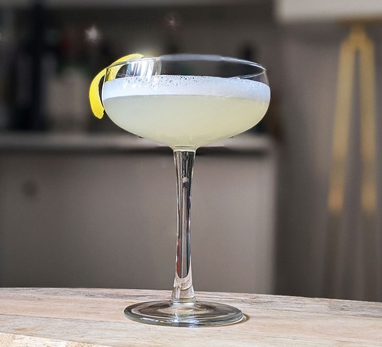

HOME
White Lady
Ingredients
- Ice
- 45ml Gin
- 25ml Cointreau (or other orange liqueur)
- 0ml Fresh Lemon Juice
- Optional: 1 Egg White (for a smooth texture)
Steps
- Add 45ml of gin to the shaker.
- Add 25ml of Cointreau (or other orange liqueur).
- Add 20ml of fresh lemon juice.
- If using egg white, add it to the shaker for a smooth texture.
- Add ice to the shaker and shake well for about 20 seconds.
- Strain the mixture into a chilled cocktail glass.
- Garnish with a lemon twist or a cherry (optional).
